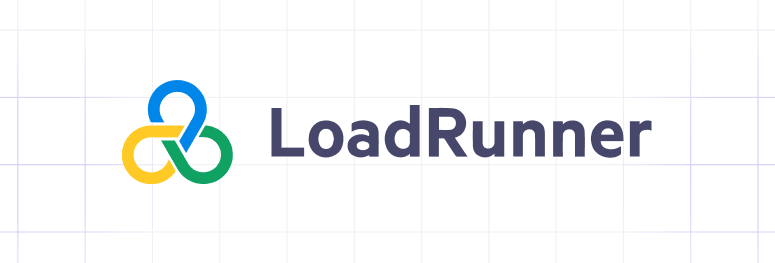
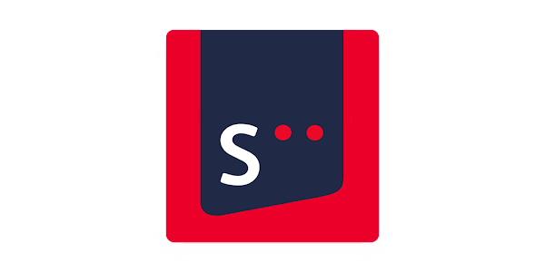

W23 Goals
|
| Goals |
Outcomes |
| Expand my network, including meeting many new people and learning more about the various roles in software development |
This position requires working with different positions in the software development lifecycle, through these meetings I was able to learn more about what goes into releasing software, not just the development. |
| Develop a more analytical, data-oriented mindset. |
I am progressing to my goal by getting more responsibiltes that require me to solve challenges by myself. This gives me the chance to improve my abilities and gain more experience and knowledge with software development/deployment/testing. |
| Learn more about the financial industry and discover if it is a potential future career path. |
I am progressing to my goal by getting more responsibiltes that require me to solve challenges by myself. This gives me the chance to improve my abilities and gain more experience and knowledge with software development/deployment/testing. |
|
Skills Developed
| Soft Skills |
Hard Skills |
| Teamwork |
Robot Framework |
| Time Managment |
LoadRunner |
| Communication |
Comparison Reports |
| Problem Solving |
Virtual User Generator |
|
|
Benefits For Next Job
|
The most beneficial aspect of this work term was the knowledge I acquired regarding
the processes involved in software releases. Initially, I had limited knowledge of
performance testing, but working within a team allowed me to grasp the importance and
techniques associated with it. Over the past four months, I have gained confidence in
the system's business flows and developed a better understanding of its overall functionalities.
Additionally, I utilized Jira and Git for project management, which are frequently requested
skills in job postings and will facilitate a seamless transition into my next position.
|
|
Technologies
|

|
Coming into the job, I was initially uncertain about the technologies in use. However, it quickly became apparent that multiple automation frameworks would be utilized.
My primary tool is Robot, a Python-based framework, which enables me to establish virtual connections with mobile devices and execute scripts controlling the devices
through test cases. It tracks the duration of each test case and outputs the times to a text file. Additionally, Virtual User Generator, a component of LoadRunner,
is employed. These scripts facilitate load testing to simulate user interactions with the bank's applications, providing performance measurements such as response time, CPU usage, and memory utilization.
|
Reflecting On My Goals
I am confident that I am making steady progress towards achieving all of my goals through
daily and weekly repetition of the key aspects of this job. I entered with high expectations
for learning throughout the term, and I have exceeded those expectations in terms of the amount
of knowledge gained. From acquiring hard skills like performance test scripting to developing
soft skills such as teamwork, I have emerged from this term as an improved software engineer.
Throughout the first four months, it has been a continuous journey of learning something new
every day and further honing these skills. I would highly recommend this job to any software engineer
seeking to acquire valuable skills and enhance their existing knowledge of performance testing.
Job Description
|

|
Performance test analysts at CIBC are responsible for gathering requirements, building, scripting, and running test cases, running baseline tests with various loads, and analyzing
the results through comparison reports. All of these tests and reports serve the same purpose: to ensure that the performance of these applications meets the standard set by the business,
which is usually a 3-second response time. One project that stood out for me was working on the new Simplii Chatbot.
While working on the Simplii Chatbot, I was able to go through this process from start to finish. From the description,
the process seems straightforward, but once it started, it required raising many defects and making changes to the plan.
This is when I had to meet with various different teams and help create a new plan to fix these problems. Going through this
process taught me how to work within a team and manage my time better.
|
Summary
To sum it up, my previous work term provided an excellent learning experience, equipping me with
valuable knowledge and skills that I can further develop in my next work term. Upon starting the
job, I had three primary objectives, and with the assistance of the team, I established a strong
foundation for ongoing learning and contributing to CIBC's achievements. As the year progresses,
I aspire to utilize the acquired skills and technologies to pave the way for success in my future career.